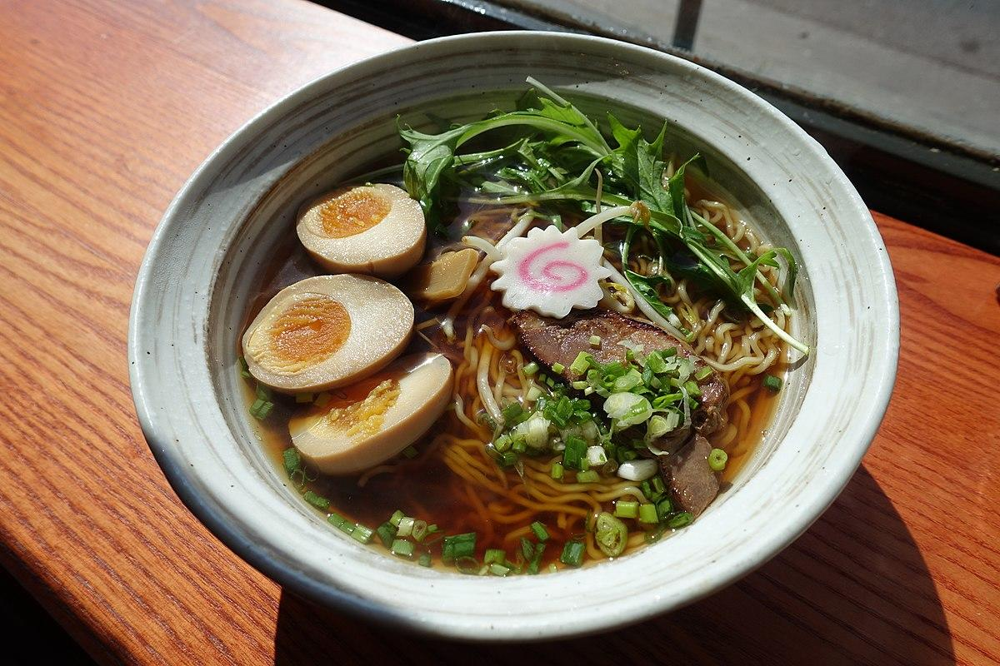
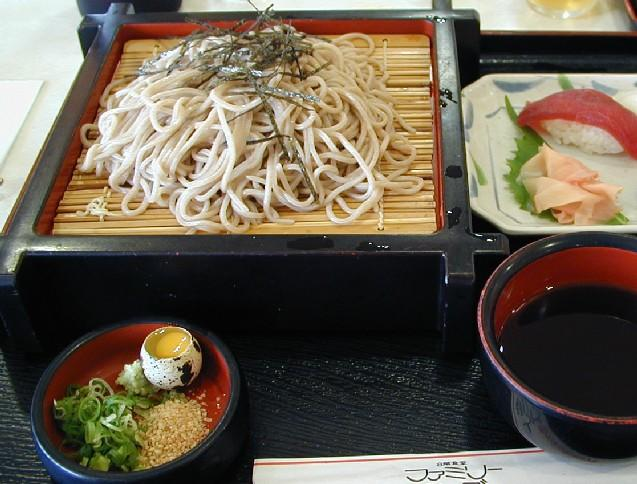
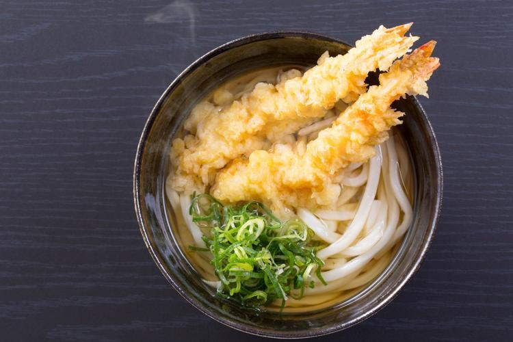
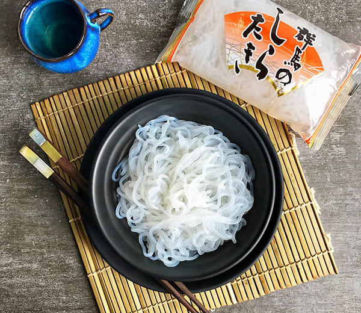
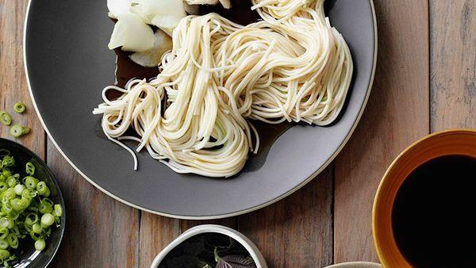
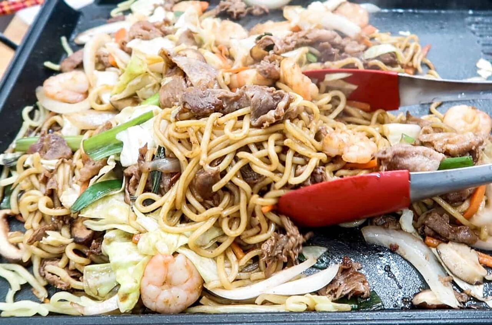
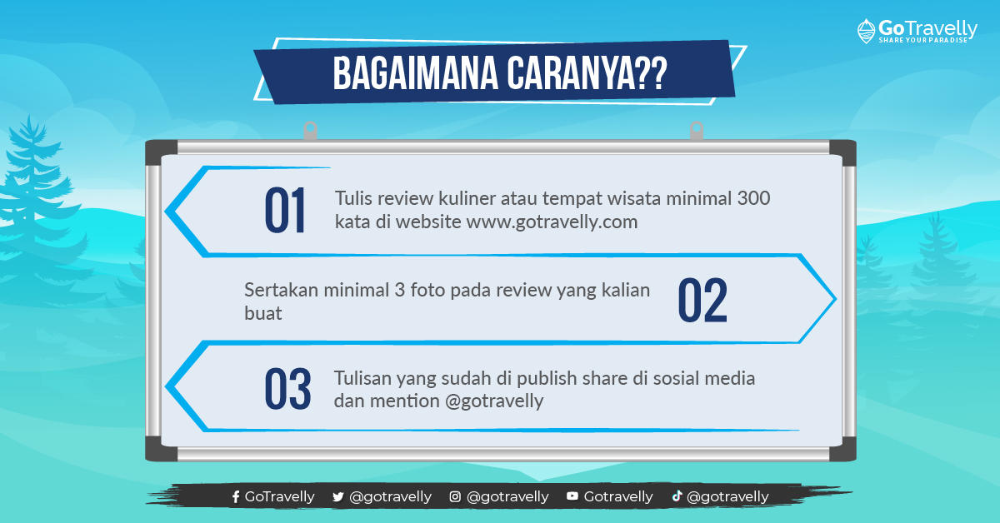

[NGUlIER] 7 Mie Populer di Jepang ini Jadi Buruan |
Kulonuwun agan sekabeh mawon. Jumpa lagi nih sama ane. Kali ini ane mau kulineran ke Jepang dong! Mau ikut gan??emoticon-Ngakak (S) Agan gak usah ikut cukup baca thread ane aja sambi bayangin pasti rasanya (BIASA AJA....emoticon-Ngakak (S))
Yup ane bakal bahas mie yang populer di Jepang yang banyak diburu pecinta mie. Agan termasuk pecinta mie gak?? Kalo iya yuk mari simak thread ane berikut ini. Cekidot..... |
1. Ramen |
|  |
Mie yang pertama tentunya ramen. Ramen ini sudah sangat terkenal di Jepang bahkan di dunia ya gan? Untuk agan yang belum pernah nyobain ramen, langsung saja datang ke negeri sakura biar tahu sensasi kenikmatannya. |
Ramen biasanya diolah dengan kuah kaldu yang kental dengan bumbu khas Jepang dan biasanya ditambahkan beberapa topping seperti telur, daging,serta sayuran. Kalo sekarang banyak variasi ramen dengan berbagai rasa dan topping seperti Jirou Ramen, Shoyu Ramen, Banshu Ramen, dll. |
Jika agan ke Jepang wajib nyobain mie yang satu ini di restoran ramen yang terkenal di Jepang seperti Ichiran, Mutekiya, Muteppo, dll. |
2. Soba |
|  |
Mie yang kedua adalah Soba. Soba ini adalah jenis mie yang terbuat dari gandum hitam. Soba ini disajikan bersama kuah yang disebut tsuyu. Soba ini termasuk favorit masyarakat Jepang karena bentunya yang tipis dan mienya kenyal.
Soba ini biasanya disajikan dengan 2 cara yaitu penyajian dingin dengan mencelupkan ke dalam saus (contoh: Morisoba, Zarusoba, Kamo-seiro) dan penyajian hangat yaitu soba rebus disajikan di mangkok dan sberi kuah panas (contoh: Kakesoba, Tsukesoba, Kitsune-soba). |
3. Udon |
|  |
Mie yang ketiga namanya Udon. Mungkin agan sudah tak asing ya dengan mie yang satu ini? Udon ini memiliki ukuran yang tebal, berwarna putih, dan memiliki tekstur yang kenyal. Dalam penyajiannya, udin ini disajikan sesuai musim di Jepang. Jika musim panas, udon akan disajikan ding, begitu juga sebaliknya.
Nah, di Jepang sendiri, banyak jenis udon mengikuti wilayahnya seperti Getsu Udon (Hokkaido), usashino Udon (Tokyo), Hiyajiru Udon (Saitama), dll. |
4. Shirataki |
|  |
Mie yang keempat ini bernama Shirataki. Mie yang kali ini terbilang sangat unik dan asing bagi lidah orang Indonesia. Kalo dilihat lihat sih mie yang satu ini mirip dengan bihun ya gan? Eitss tapi mie ini terbuat dari agar agar yang sangat kenyal. Nah setelah matang, mie ini dimasak menjadi Oden ataupun Sukiyaki.
Shirataki ini biasanya dihidangkan dengan beberapa campuran sayuran dan potongan daging. Mie ini juga rendah kalori jadi bagus buat agan yang ingin menurunkan berat badan. Gimana tertarik mencobanya gan?? |
5. Hiyamugi |
|  |
Mie yang kelima ada Hiyamugi. Mie yang satu ini berbahan dasar gandum dan berwarna putih. Hiyamugi mirip dengan mie jenis udon dan somen. Namun yang buat beda adalah ukurannya yang tidak sekecil somen dan sebesar udon.
Biasanya mie ini dihidangkan sesuai dengan musim di Jepang. Jika musim panas maka akan dihidangkan dingin bersama es batu dan jika musim dingin akan disajikan hangat. Dan kadang juga mie ini diberi pewarna. |
6. Somen |
|  |
Mie yang keenam ada Somen. Mie yang satu ini memiliki bentuk yang tipis-tipis dan berwarna putih. Somen terbuat dari gandum. Mie ini biasanya disajikan dingin menggunakan es batu dengan potongan udang yan dipercaya masyarakat Jepang menghilangkan panas dalam. |
7. Yakisoba |
|
Mie yang terakhir namanya Yakisoba. Mie yang satu ini bisa disebut mie gorengnya Jepang gan. Yakisoba mirip dengan mie jenis ramen, namun cara memasaknya berbeda. Jika ramen direbus maka Yakisoba digoreng dengan potongan daging serta sayuran. Yakisoba memiliki rasa yang manis, gurih dan mienya yang memiliki tekstur kenyal |
BONUS GIVEAWAY: |
|  |
Nih buat agan ada giveaway menarik dari gotravelly.com caranya agan tinggal nyeritain pengalaman liburan dan kulineran agan aja di web itu gampang kan? yah kayak nulis thread di kaskus kaya gini lah gan. Langsung aja lah ini ane kasih tkpnya crottt.... |